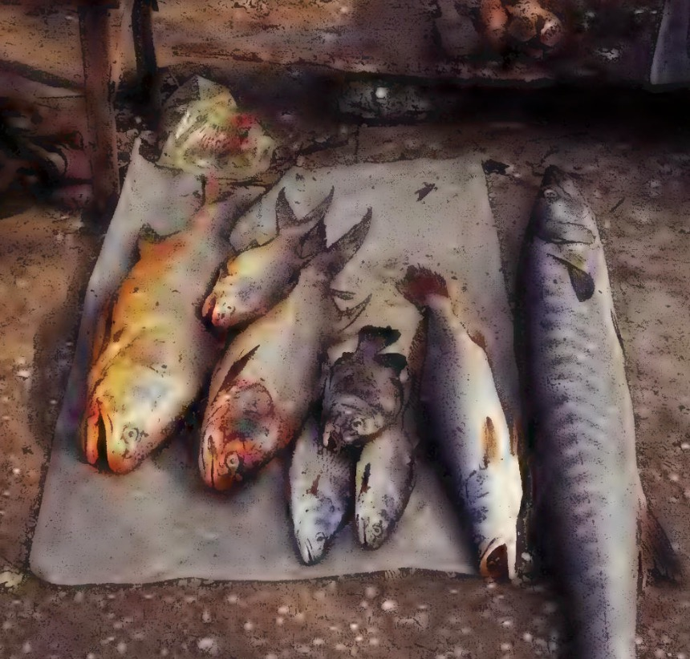

Launch to Maldives
March 12, 2026

Overview
Based on Gavin Young's account in Slow Boats, this document details the meals prepared by the cook during the journey to the Maldives Islands aboard a small Maldivian launch.
Voyage Details
- Destination: Malé, capital of the Maldives
- Vessel: Small Maldivian launch (25 tons)
- Duration: Three days and three nights
- Departure Delay: Several hours due to dispute between captain and Sea Eagle (representing owners)
Meal Information
Chunk 035 - Voyage to Malé
While the text describes the challenging voyage conditions and the captain's unpleasant demeanor, specific meal details from this chunk are not explicitly detailed in the available text. The narrative focuses on:
- The uncomfortable seating arrangements imposed by the captain
- The delay in departure due to administrative disputes
- The cramped, overheated conditions aboard the launch
Chunk 036 - Continued Voyage
This chunk continues to describe the difficult sea conditions but does not contain specific meal preparation details. It mentions:
- Constant movement and instability ("nearly on our beam ends once every minute and a half")
- Shifting cargo and equipment
- Overheated, confined cabin space
- The chimney acting as a stove in the already hot cabin
Notes on Meal Preparation
Although specific meal items are not enumerated in the available chunks, we can infer from contextual clues:
- Cooking Facilities: The chimney functioned as a stove in the cabin
- Challenging Conditions: Meals were prepared in a constantly moving, overheated, confined space
- Limited Resources: The small 25-ton launch would have had restricted galley facilities
- Duration: Meals would have been prepared for three days and three nights
Related Information
For more detailed meal information from Gavin Young's travels in the Maldives region, see:
- chunk_035: Contains specific meal details from Malé, Maldives (referenced in previous meal extraction task)
Source
Slow Boats by Gavin Young
- Chunk 035: Voyage to Malé, Maldives
- Chunk 036: Continued voyage conditions
Document compiled from Gavin Young's Slow Boats, chunks 035-036